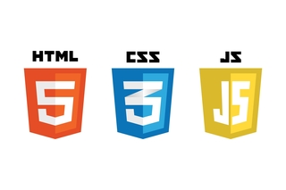
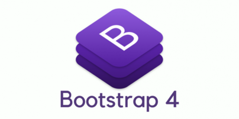

My name is Ryan Ha, and I am a graduate of the Class of 2020 at UC Irvine with a BS degree in Pharmaceutical Sciences. I am currently attending the Skaggs School of Pharmacy and Pharmaceutical Sciences at UC San Diego as a PharmD candidate for the Class of 2024. Check out my LinkedIn for more about me!
I made this app from scratch during the final quarter of my Senior year at UCI. Because I was only taking one class and had some free time at home due to the COVID-19 pandemic, I wanted to challenge myself by learning something new. Computer programming is a discipline I have always been curious about because my mom was a programmer herself. In high school, I had considered computer programming as a potential career option. I enjoyed problem-solving and thought it would be neat to contribute to the technological advancements we enjoy today. Still, I felt a stronger pull towards a career in healthcare. But presented with this unexpected free time, I saw my chance to give programming a try.
Initially, I didn't set out with the goal of creating this project, or any project for that matter. My intention was simple: learning to code. I knew that Python was a popular programming language and was the first one my roommate learned as a Computer Science major. I started by enrolling in an introductory course to Python on Scrimba, a free self-paced course online. Before I knew it, I was hooked. Despite my rough start, the satisfaction I felt from each problem I solved kept me wanting more. By the end of the course, I had created a number guessing game, a math tutoring app, and a simple encryption machine. It occurred to me that I could make a web app that could be helpful in the pharmacy or healthcare fields. At the time, I was taking a pharmacotherapy class in which I learned about treatment algorithms and it clicked: I could make an app to do just that—to inform healthcare providers on how to treat some condition.
Thus, the idea for this project was born. I could create something useful, share it online, and say to myself, "Wow, Ryan! You made that!"
Aside from the Python language I had initially learned, I quickly realized that I also needed HTML and CSS to build the website from scratch. I completed the introductory HTML/CSS course and explored a little bit of JavaScript. Next, I learned to use Flask, a Python micro web framework, by watching YouTube videos ranging from Harvard's CS50 lectures to random tutorials. These videos also taught me how to integrate Bootstrap 4 to make my website more interactive and user friendly.
Although I acquired many new technical skills such as programming languages and a web framework, developing this app taught me how to plan and execute a project from square one. I had an idea of what kind of app I wanted to make, how it would look, and how it would function, but I had no clue how to go about it. I searched the web and discussed it with my computer science friends until I could finally put together a roadmap of the skills I needed. Once I became proficient, I used my undergrad research experience to find information for the app's content. I allowed myself to be creative with this project by styling the app in a way that looked nice and was user friendly. But the biggest takeaway was learning how to problem-solve and debug my code. Whenever something didn't work, I would spend hours trying to figure out what went wrong. I scoured YouTube, pored over Stack Overflow posts, and bugged my mom for potential solutions. But it was worth it. Being able to create something that was way out of my comfort zone and scope of knowledge was extremely rewarding. I'm glad my first experience with programming is something I can call my own.
{% endblock %}